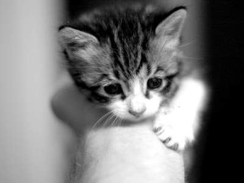

Cat Web
There are two means of refuge from the miseries of life: music and cats.
- Albert Schweitzer

Time spent with cats is never wasted.
- Sigmund Freud

No matter how much cats fight, there always seem to be plenty of kittens.
- Abraham Lincoln

A countryman between two lawyers is like a fish between two cats.
- Benjamin Franklin

Just watching my cats can make me happy.
- Paula Cole

In ancient times cats were worshipped as gods; they have not forgotten this.
- Terry Pratchett

Cats seem to go on the principle that it never does any harm to ask for what you want.
- Joseph Wood Krutch

Authors like cats because they are such quiet, lovable, wise creatures, and cats like authors for the same reasons.
- Robertson Davies